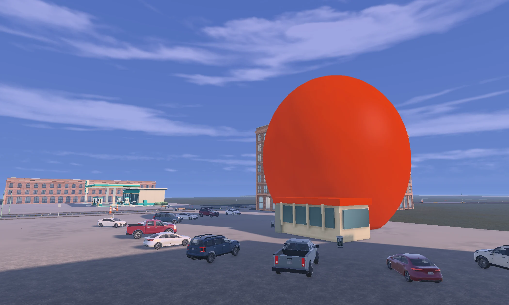
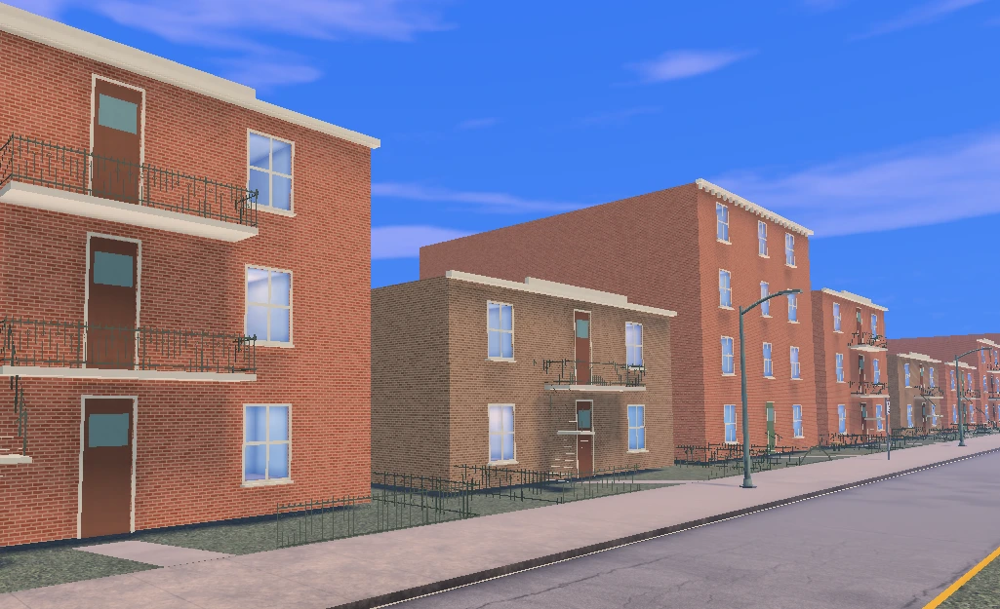
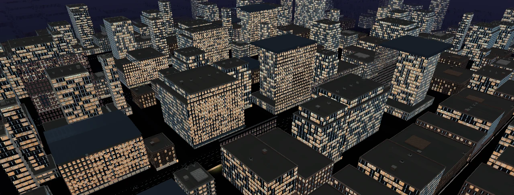
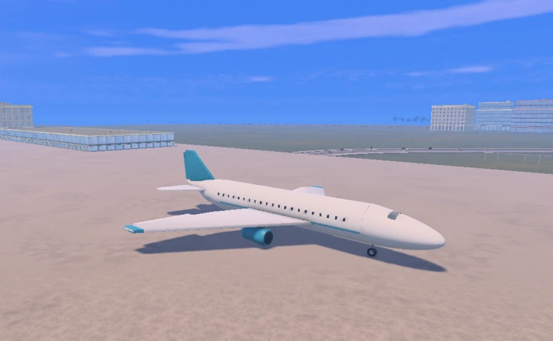
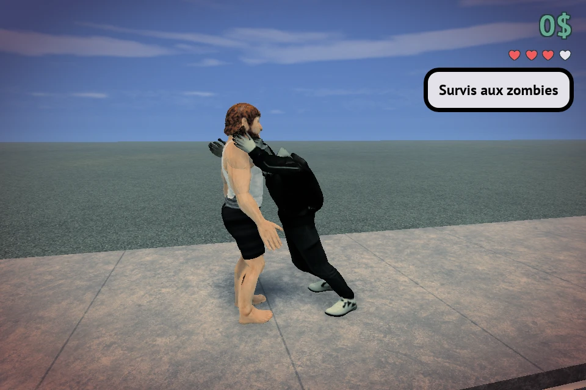
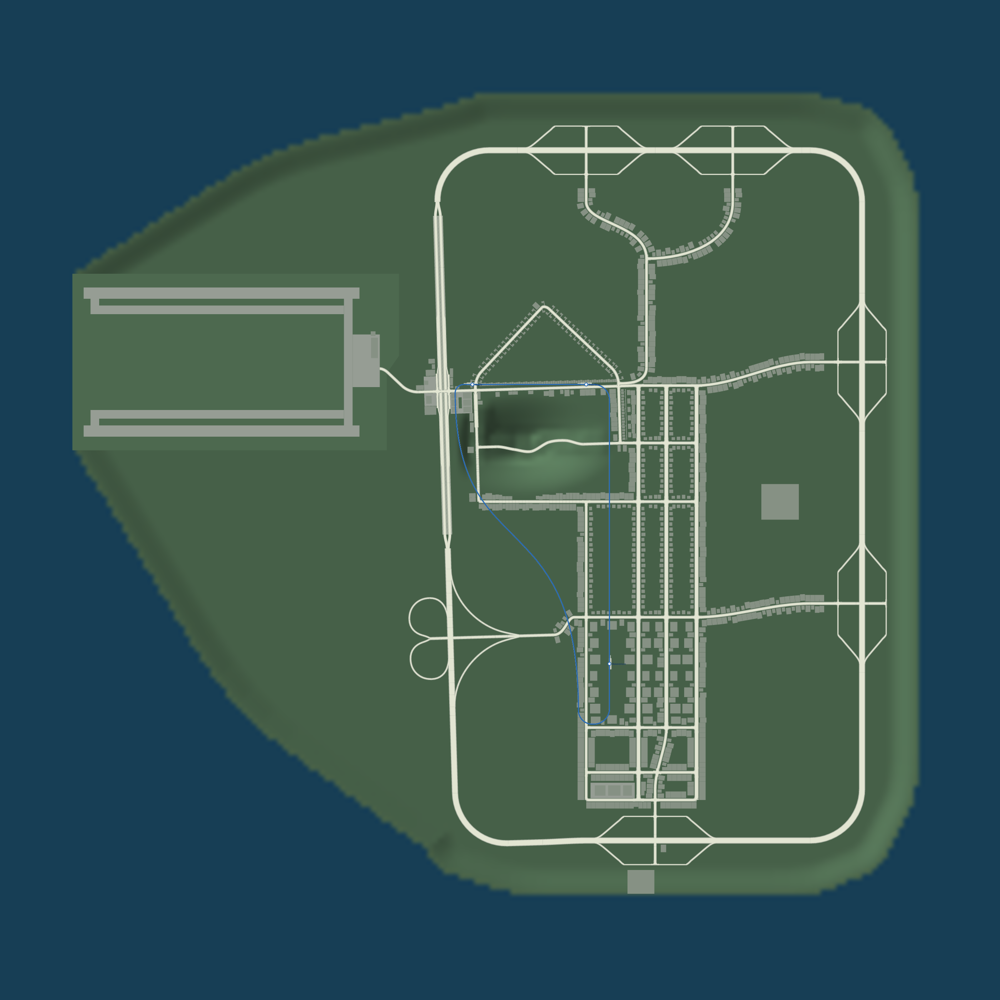
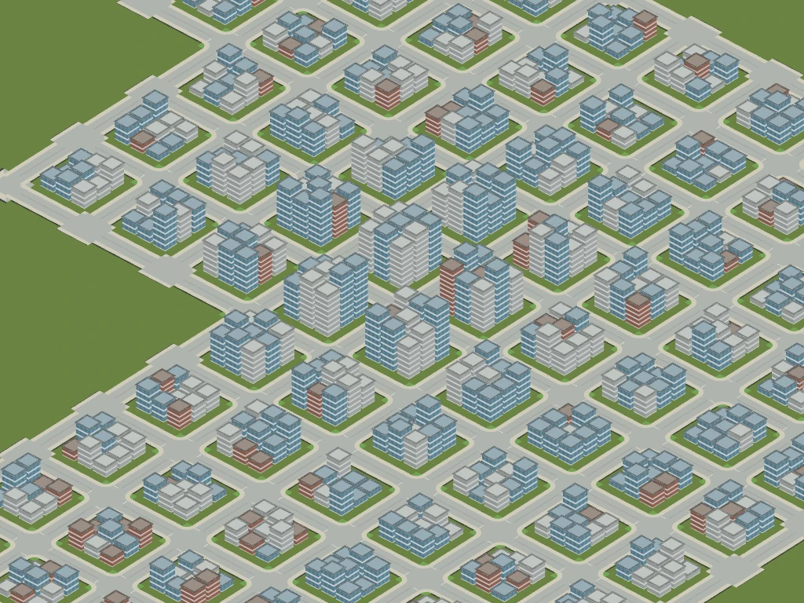
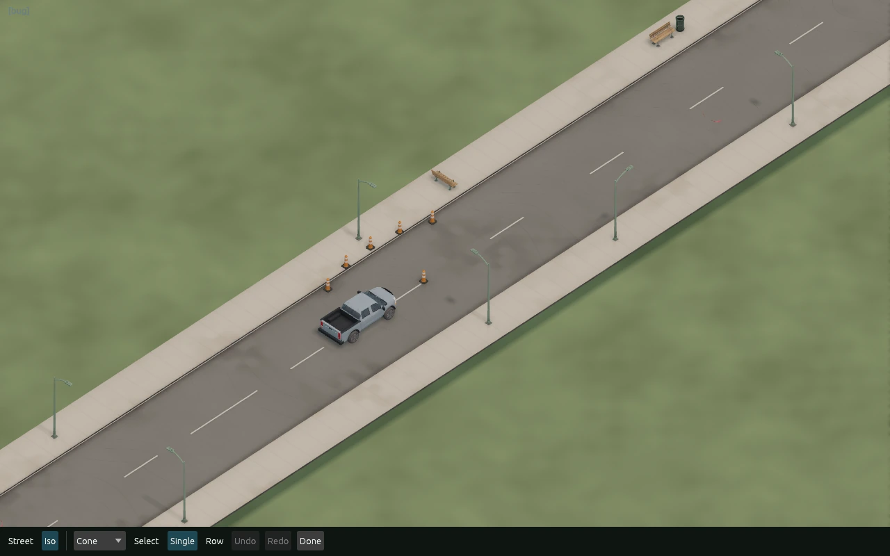
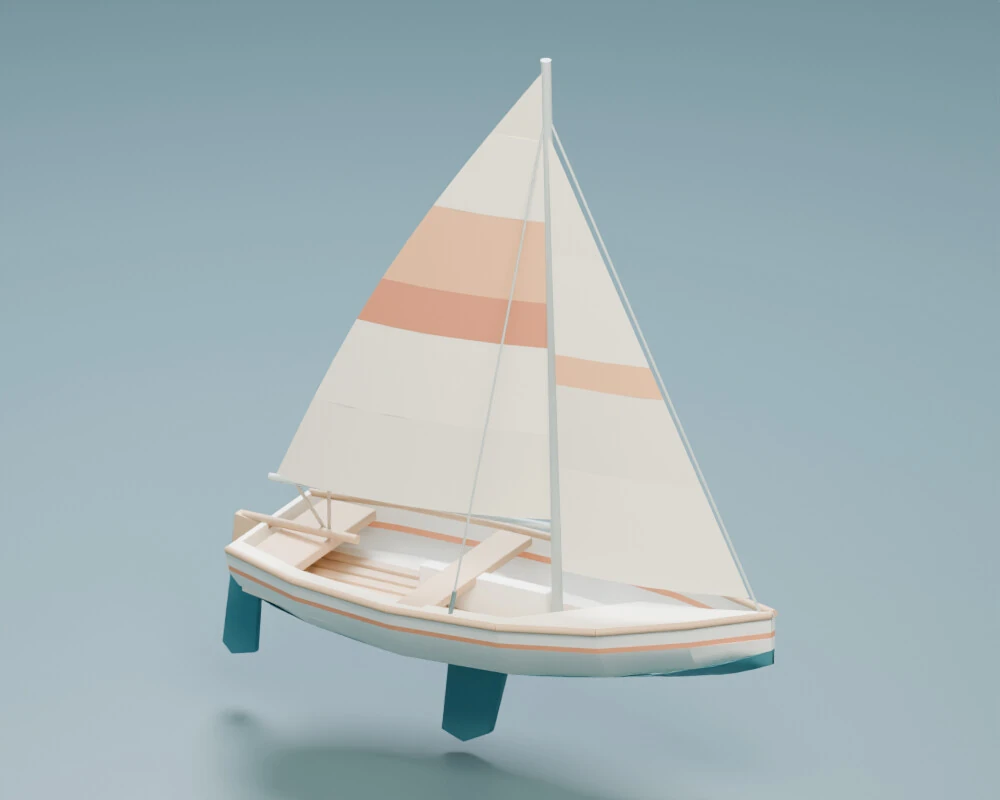

MTL Jobines
Tu joues Mario Saint-Onge, qui débarque à MTL et se cherche une jobine.
Jouer dans le navigateurLes quartiers





Taxi
Prends un client à bord et conduis-le à destination.

Déneigement
Déneige le boulevard pendant que la neige tombe encore.

Station Acadie
Gare ton auto et prends le métro.

Mode zombie
Accepte la jobine de Cynthia sur ton téléphone. Tiens bon aussi longtemps que tu peux.

La carte de MTL
MTL est une ville fictive inspirée de Montréal. Elle a son aéroport, sa ligne de métro, son centre-ville et ses quartiers résidentiels. Le monde chiale souvent à propos de la neige.
Jouer dans le navigateurSous le capot
La création de MTL Jobines
OpenCity
OpenCity organise les rues et bâtiments de MTL Jobines. Son noyau Rust, commun au jeu et à l’éditeur, transforme les cartes .road en surfaces 3D et en voies de circulation.

Un profil .road décrit une rue d’un trottoir à l’autre. Plusieurs rues peuvent partager ce profil. L’éditeur permet d’ajuster leurs courbes et de les raccorder aux intersections.
road cross_street:
sidewalk carlane middle carlane sidewalk;
endPlacer les objets
L’éditeur intégré au jeu permet de placer un objet seul ou toute une rangée. Ici, les cônes longent le trottoir, espacés de 2,5 mètres.

cones_2 = prop_row(cone,
-0.05, 0.04, 0, 0.06, 0.06, 0.035,
{spacing: 2.5, elevation: 0.001});Claydash
Ce dériveur de MTL Jobines a été modélisé dans Claydash, un modeleur 3D basé sur les SDF et conçu pour le prototypage rapide avec des agents IA.
